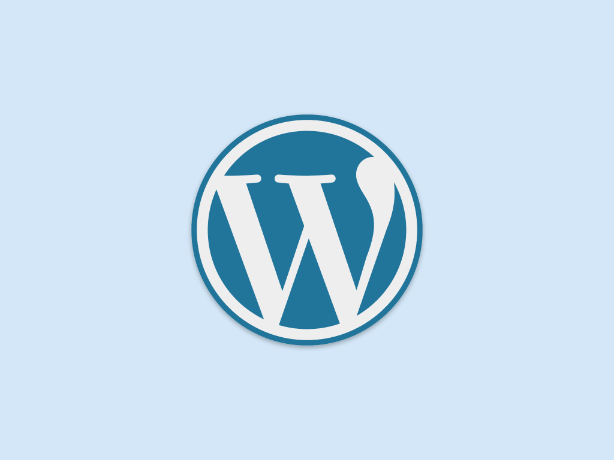

Web Management, 1IK424
Linnéuniversitetet, VT2013
Wordpress part I

WordPress
- Ett CMS (Content Management System)
- Wordpress.org vs. wordpress.com
- Fritt att använda, kräver webbserver och databas (webbhotell)
- En kärna, flera olika utseenden (teman)

Begrepp vi kommer stöta på
- Post, Pages, Custom Post Type
- Themes, Widgets, plugins
- Categories, tags, taxonamy
- Post format, slug, sticky post
- Include files, "the loop", template parts
- Child themes, wp_query,

Vårt mål
- Kunna skapa en dynamisk webbplats (blogg, sidor, menyer o.s.v.)
- Kunna skapa ett tema från grunden
- Kunna utgå från ett befintligt tema
Resurser
http://codex.wordpress.org/

Posts vs. Pages
Post - "Att posta ett inlägg"
Categories, tags, custom taxonomies (blog post, news, reviews, innehåll som uppdateras ofta)
Pages - Statiskt innehåll, Sällan uppdaterade
Att märka upp sina poster
- Category - En post kan tillhöra flera kategorier
- Tag - A keyword that you can add to the post
- Custom taxonomy - ???
Kunna sortera, visa endast visa kategorier...
Att märka upp sina poster
- Category - En post kan tillhöra flera kategorier
- Tag - A keyword that you can add to the post
- Custom taxonomy - ???
Kunna sortera, visa endast visa kategorier...
Att pimpa wordpress
Themes, Widgets, plugins
Möjligheter att bygga ut sin applikation
Exempel på teman
BILDER PÅ OLIAK TEMAN
Exempel på plugin
BILDER PÅ OLIAK Plugin
Exempel på widgets
BILDER PÅ OLIAK widgets
Att byta ett tema och installera ett plugin
Välj ett Tema och visa att det inte går att ladda ner
via wordpress.
Att tänka på...
Problem med för mycket plug-in
och "knasiga" teman
WHEN WORDPRESS FUCK UP
Install - DEMO - Noname! No content
MÅL: Bild på powerpointbild, Ta morgans bild
index.php
Skapa en sida som skriver ut bloggens titel, bygg på sidan med en header,
en layout.
Hitta sida med layout som jag tagit from HTML Dog
Så vi ska bara ha en index-fil?
Eller kan vi struturera upp det?
BILD PÅ OMRÅDEN (header, content, sidebar, footer, left-sidebar)
Att bryta ut koden...Bild på hela koden med header i egen fil
DEMO - Jobba upp strukturen
Vi har nu en struktur på vår sida
Vart lägger jag statiska resurser?
Layout. Vart lägger jag bilder, javascript o.s.v.
Add a loggo.
Vi har nu en struktur på vår sida
Men all data då?
Vart hamnar våra postade inlägg?
Hur visar jag upp all information
Dags att fylla på med data. The loop. Fokus på blog
The loop
Att skriva ut poster
while the_post()
Vad kan vi få för information från posten
the_title(), the_author()
Vad kan vi få för information från posten
DEMO
is_singular()
Uppgift till nästa gång
Fyll blogg med data - Bli bekväm med admingränssnittet
Testa!
Theme - Child themes
Implementera en sökruta
Lägg kategorier i sidebar
Sorterara på taggar
Kommentarer på bloggpost
Lägg kategorier i sidebar
Lägg kategorier i sidebar
Create a menu
Pages
Add pages to menu
Pages templates
Custom posts - Meta posts
Dölja saker i admingränssnittet
SEO Wordpress
Custom fields
Meta boxes
Plugins vad är det och hur kan jag använda det
 Detta verk är licensierat under en
Creative Commons Erkännande-IckeKommersiell-DelaLika 3.0 Unported Licens.
Detta verk är licensierat under en
Creative Commons Erkännande-IckeKommersiell-DelaLika 3.0 Unported Licens.